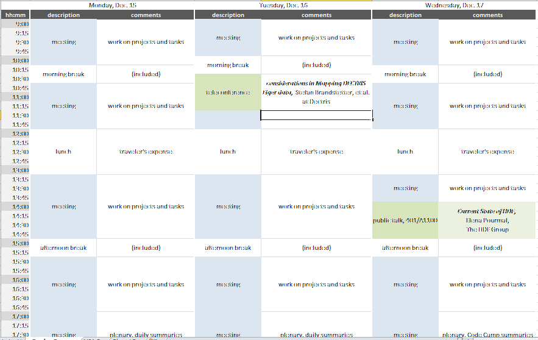

NIAC2014 CodeCamp¶
The code camp allows existing NeXus developers to meet and work together on developing software or resolving particular NeXus design issues.
See NIAC2014 for administrative details about this meeting.
Planned Schedule (subject to change)¶

Topics to be Considered¶
A subset will be chosen on the first day of the meeting.
Walk through
Issues posted on the NeXus GitHub repository
Proposals and other topics listed on the [Discussions] (Discussions.html “wikilink”) page
Close issues that are of minor importance and not of particular concern to anybody and not likely to be resolved any soon.
Choose topics from the preliminary list below:
Procedural questions:
How to organize proposals and discussions
How to remove ballast, when to break compatibility, versioning and validation
Fundamental design issues:
Clarify rank specification
related to #266: implement difference in rules between base classes and application definitions
Discuss NeXus interfaces
How to avoid name clashes during future extensions of the Nexus standard
Optional contents in application definitions?
Discuss lightweight tags versus application definitions
Rules for multi file NeXus files
Class specifications:
NXformula?
NXdata: Assigning axes to data once more again
Prepare contributed definitions for ratification
Work on software:
Finish support for attribute arrays (who proposed this? please provide details!)
Off-site excursion to -tba-
Agenda¶
|
*Monday* |
*Tuesday* |
|
|---|---|---|---|
9:00-10:00 |
Review |
Short procedural |
NAPI issues |
10:00-10:30 |
Coffee |
Coffee |
Coffee |
10:30-12:00 |
Cansas |
Telco with DECTRIS |
|
12:00-13:00 |
Lunch |
Lunch |
Lunch |
13:00-15:00 |
DECTRIS, |
nexpy |
HDF-5 talk |
15-15:30 |
Coffee |
Coffee |
Coffee |
15:30-18:00 |
MXmx, |
Reprioritise for last day |
Tuesday¶
teleconference with Dectris: 10:30 AM
for end of day review¶
Wednesday¶
public talk: Current State of HDF5, Elena Pourmal, The HDF Group, location: 401/A1100